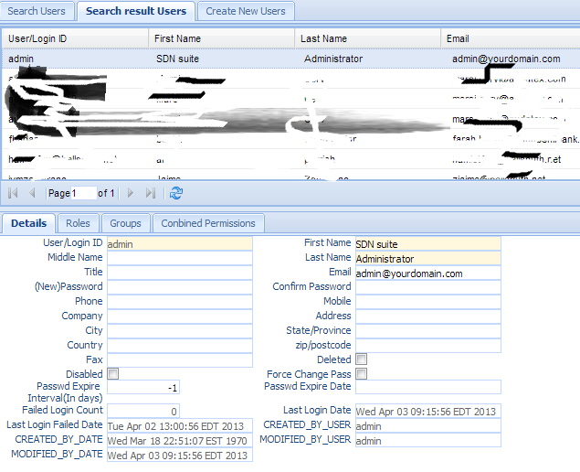

Users¶
The Users function manages the users in the system. There is only one user, admin, who is created when the system is first initiated.
Users are the individual members of the organization who are allowed to log in to the SimpleOFAC to perform their required tasks. This includes investigators, compliance officers, administrators, etc. The administrator controls the levels of functionality and the data that users can access by assigning them to Groups or by granting roles directly to each user.
Click the Users Tab in the left navigation menu under Administration and a new Users Tab folder will be created in the right panel. There are 3 sub-Tab folders: Search Users, Search Result Users and Create New Users.

Search Users¶
Search Criteria
| Field Name | Description |
|---|---|
| User/Login ID | Login Id. |
| First Name | User’s first name. |
| Middle Name | User’s middle name. |
| Last Name | User’s last name. |
| Title | The title of the user. |
| The email of the user. | |
| Phone | The phone number of the user. |
| Mobile | The mobile phone number of the user. |
| Company | The company user works for. |
| Address | User’s address. |
| City | User’s city. |
| State/Province | User’s state. |
| Country | User’s country. |
| zip/postcode | User’s postal code. |
| Fax | User’s fax number. |
| Deleted | Check this box if only show deleted users. |
| Disabled | Check this box if only show disabled users. |
| CreatedByDate | Date and Time when this entry was created |
| CreatedByUser | User who created this entry. |
| ModifiedByDate | Last modified date and time. |
| ModifiedByUser | Last modified user. |
| AND | Select AND radio box if you want those criteria added together. |
| OR | Select OR radio box if you want to get the result if either of the criteria is met. |
Functional buttons¶
- Find: – click the Find button to search.
- Clear:– click the Clear button to clear all the criteria.
Search Result Users¶
The top part is the table which shows the list of the users that meet the search criteria. The bottom parts are the details, roles, groups, and combined permissions of the selected entry. Each entry can have 0 to many roles, groups, and permissions. (see Roles, Groups, and Permissions for details on Roles, Groups and Permissions)
Update/Delete Users¶
Double Click the selected record in the table to modify this entry. A new tab folder “Update/Delete Users” will be added, as shown below.
Functional buttons¶
- Update: – Make changes on the users and save and switch back to the “Search result users” Tab. Some of the fields in this form are read only, like User ID, created/modified user, and date.
- Reset:– Reset the data to its initial value and discard all the changes.
- Cancel:– Cancel this change and switch back to the “Search result users” Tab.
- Roles:– Assign roles to the user. Clicking this button will open a popup window, as follows;

When a role is assigned to an user(s) or group(s), it must also specify an Organizational Unit. A user can have a role A in Organization Unit X and role B in Organization Unit Y.
First select an orgunit from the orgunit drop down list and then grant or revoke the user’s roles by checking or not checking the check box beside each role.
- Update – Click the Update button to update the changes and close the pop window.
- Reset – Reset the data to its initial value and discard all the changes.
- Cancel –Cancel this change and close the pop window.
- Groups:– Assign groups to the user. Clicking this button will open a popup window, as shown below:
Grant or revoke the group to the user by checking or not checking the check box besides each group.
- Update – Click the Update button to update the changes and close the popup window.
- Reset – Reset the data to its initial value and discard all the changes.
- Cancel –Cancel this change and close the popup window.
Create New Users¶
Select the “Create New Users” Tab to create a new entry.
| Field Name | Description |
|---|---|
| User/Login ID | Login ID; it must be unique within the system. |
| First Name | User’s first name. |
| Middle Name | User’s middle name. |
| Last Name | User’s last name. |
| Title | The title of the user. |
| The email of the user. | |
| password(new) | User’s initial password; it can not be empty. |
| password(confrim) | User’s initial password; it must be the same as password(new). |
| Phone | The phone number of the user. |
| Mobile | The mobile phone number of the user. |
| Company | The company the user works for. |
| Address | User’s address. |
| City | User’s city. |
| State/Province | User’s state. |
| Country | User’s country. |
| zip/postcode | User’s postal code. |
| Fax | User’s fax number. |
| Deleted | Check this box to mark this user as deleted. |
| Disabled | Check this box to mark this user as disabled. |
| Force Change Pass | Check this box to force user to change password when log in for the first time. |
| Password Expire | When the password will be expire. Interval in days. |
| Password ExpireDate | The date the password will be expired. |
| Failed LoginCount | Number of times the user login failed. |
| Last Login Date | Last date the user log in successfully. |
| CreatedByDate | Date and Time when this entry was created. It is a read only field. |
| CreatedByUser | User who created this this entry. It is a read only field. |
| ModifiedByDate | Last modified date and time; It is a read only field. |
| ModifiedByUser | Last modified user; It is a read only field. |
Functional buttons¶
- Create: – Click the Create button to create a new user and switch to the “Search result Users” Tab.
- Clear:– Click the Clear button to clear all the fields.
- Cancel:– Click the Cancel button to cancel the operation and switch back to the “Search result users” Tab.